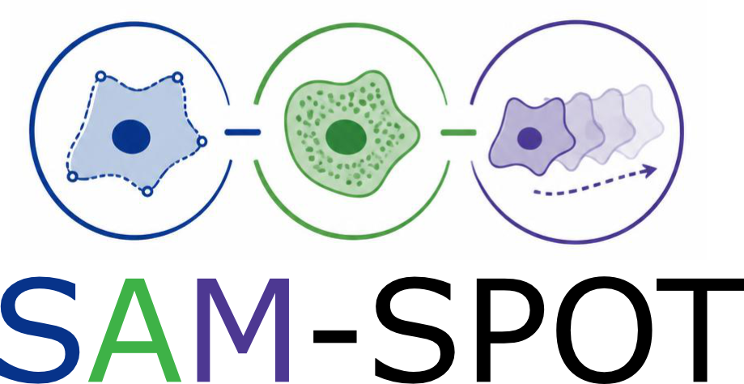
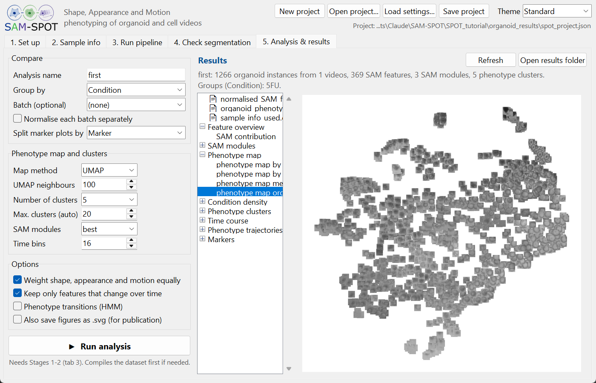
SPOT (Shape, Appearance and Motion Phenotype Observation Tool) measures the SAM phenome of every organoid or cell in a time-lapse video: the shape, appearance and motion features of each object at each time point. It then maps all objects onto a phenotype landscape, finds SAM modules (groups of features that change together), phenotype clusters, the average phenotype trajectory of each condition and the transitions between phenotypes.
The GUI runs this whole workflow from a folder of videos to the figures, in three stages:
| Stage | Steps |
|---|---|
| 1. Find objects | Prepare the videos (grayscale, resize, drift correction) → detect organoids (YOLOv3 network) → track them over time → outline them (attention U-Net) → clean up the tracks. For a Cell Tracking Challenge dataset the annotations replace detection, tracking and segmentation. |
| 2. SAM phenome | Shape, appearance and motion features of every object at every time point; optional fluorescent marker measurements; compile all videos into dataset tables. |
| 3. Analysis | Feature normalisation, SAM modules, phenotype map (UMAP / PaCMAP), clusters, time course, trajectories, phenotype transitions (hidden Markov model) and marker plots. |
The heavy computation runs in a separate process, so the window stays responsive, a run can be stopped at any time, and a stopped run resumes where it stopped.
README.md of the repository (a conda environment, e.g. SAM-SPOT_env). A GPU is used if available but is not required.conda activate SAM-SPOT_env python gui/spot_gui.pyOn Windows you can instead double-click
gui/launch_spot_gui.bat (edit SPOT_ENV in it if your environment has another name).models folder, or downloaded automatically from Zenodo the first time they are needed.The header holds the project buttons (New project, Open project..., Load settings..., Save project) and the Theme menu. Below are five tabs, used from left to right:
| Tab | What you do there |
|---|---|
| 1. Set up | Choose what to analyse, the input and results folders, the pixel size and time between frames; tick the videos to analyse. |
| 2. Sample info | Give every video its condition (e.g. drug) and optionally genotype, patient / batch and marker. |
| 3. Run pipeline | Tick the steps, click Run, follow the progress of every video and the log. |
| 4. Check segmentation | Step through each video with the outlines drawn on top, to check that the objects are found and outlined well. |
| 5. Analysis & results | Choose how to compare the objects, run the analysis and browse every figure and table. |
Hover over any label, box or button to see a short explanation.
This tutorial uses the folder data/full_dataset_with_biomarker/26-SPOT-Drug screen-dye/Hoescht Only/Videos of the repository: 15 brightfield videos of organoids treated with DMSO, cisplatin (6 and 100 µM), 5-fluorouracil or docetaxel. To keep it quick, only one video (E5 5FU Hoechst 1) is ticked for analysis; the steps are the same for all of them.
spot_project.json are written here; your videos are never changed..avi .tif .tiff .wmv .mp4 .mov).<name> BF.AVI has a fluorescent marker video <name>.AVI, tick Each brightfield video has a matching fluorescent marker video and check the name ending and marker channel. The organoids are found in the brightfield video and the marker is measured inside them.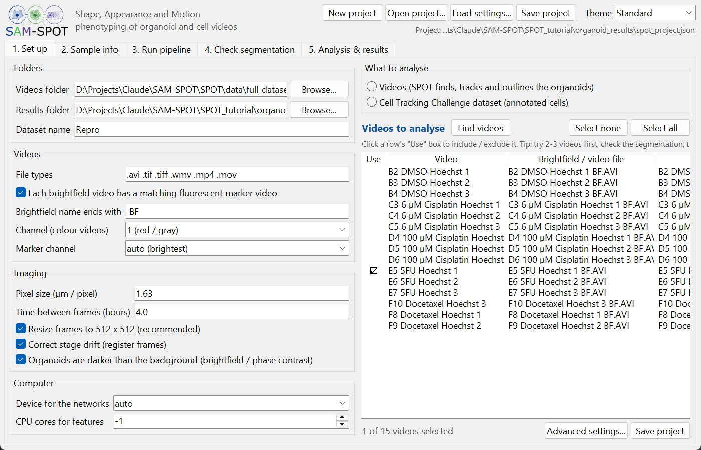
Each row is a video. The Condition (e.g. the drug and dose) is what the analysis compares; Genotype, Patient / batch and Marker are optional.
C10 6 µM Cisplatin Cytotox 2 (the well C10 and replicate 2 are dropped; with marker videos the last word is the marker). Always check the result.Condition, Genotype, Patient, Marker.metadata_expt.csv in the results folder).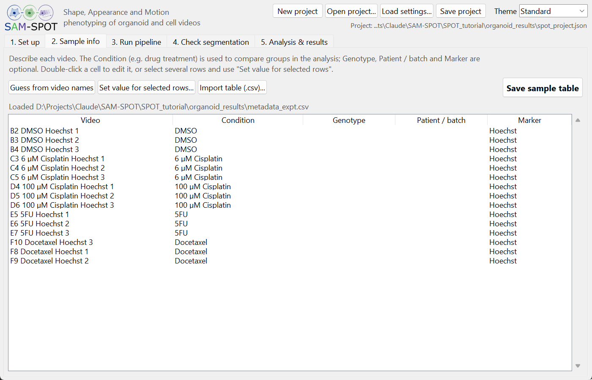
| Symbol | Meaning |
|---|---|
| ✓ | done |
| · | to do |
| ▶ running | being computed now |
| 0 org. | no organoids were found in this video (it is left out of the analysis) |
| ⟳ | settings changed since it was computed: it is recomputed on the next run, even with Skip steps already completed ticked |
| ✗ failed | an error occurred: the red lines of the log say why; the other videos continue |
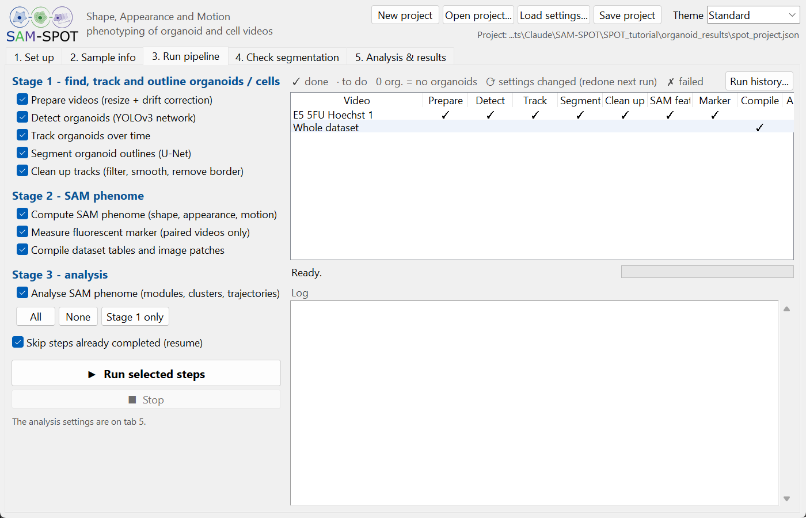
As a guide, for the 1-video example on a CPU: preparing took under a minute, detection about 3 minutes (much less on a GPU), tracking, segmentation and clean-up under half a minute each, and the SAM features a few minutes. Stop ends a run; the step running at that moment is lost, finished steps are kept.
Choose a video and step through the frames with the slider, ◀ / ▶ or Play. Three layers can be drawn on top:
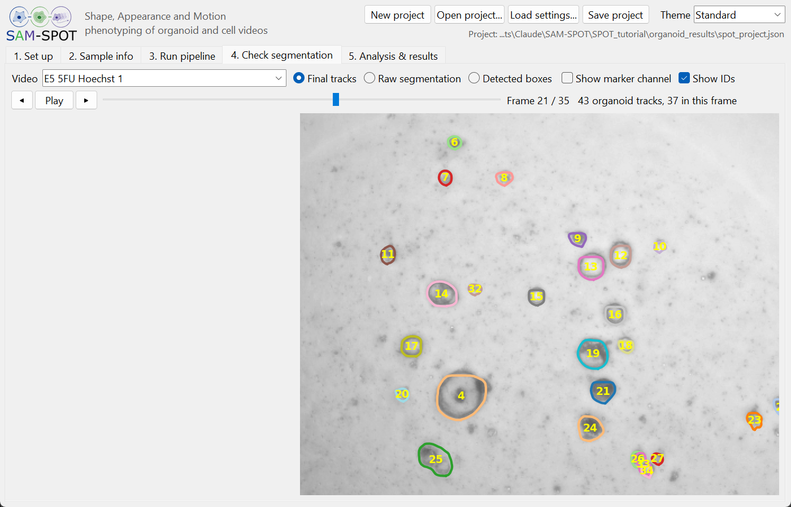
analysis/<name>; use a new name to keep an earlier analysis..csv table) in its own program.The line above the results summarises the analysis (number of organoid instances, features, modules and clusters). If a panel could not be made (e.g. too few organoids for the transitions), it is listed as Not completed and the rest of the analysis is still saved.
The Cell Tracking Challenge provides 2D and 3D time-lapse videos of cells with reference segmentations and tracks. SPOT can phenotype the cells of its 2D datasets, using the annotations instead of the networks. The same option analyses the results of your own segmentation and tracking, if you save them in the challenge format.
Download a 2D training dataset, e.g. PhC-C2DH-U373 (glioblastoma-astrocytoma cells on a polyacrylamide substrate, phase contrast, 2 sequences of 115 frames), from http://data.celltrackingchallenge.net/training-datasets/PhC-C2DH-U373.zip, and unzip it. A dataset folder looks like this:
PhC-C2DH-U373/ 01/ t000.tif, t001.tif, ... the frames of sequence 01 01_GT/TRA/ man_track000.tif, ..., man_track.txt gold truth tracks (a marker per cell) 01_GT/SEG/ man_seg###.tif gold truth segmentation (some frames) 01_ST/SEG/ man_seg###.tif silver truth segmentation (all frames) 02/ 02_GT/ 02_ST/ ... sequence 02 (01_RES/ mask###.tif, res_track.txt your own results, optional)
PhC-C2DH-U373), or a folder containing several datasets. Every sequence is listed as <dataset>-<sequence>, with the track table it will use.TRA masks; for many datasets these are only small markers inside each cell, not its outline.res_track.txt in <sequence>_RES, e.g. from your own tracker.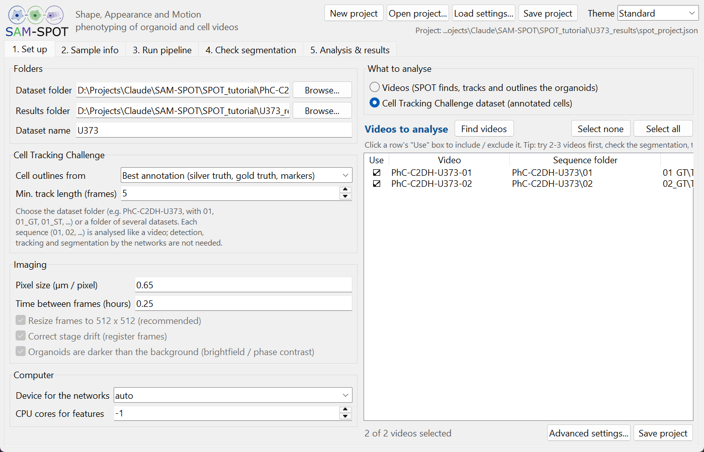
On tab 2, Guess from video names sets the condition of every sequence to its dataset name (here PhC-C2DH-U373); with several datasets, compare them by Condition. On tab 3, Detect, Track and Segment are greyed out: they are not needed. The clean-up step is now Outline the annotated cells, remove cells at the border (column Outlines). Click Run selected steps.
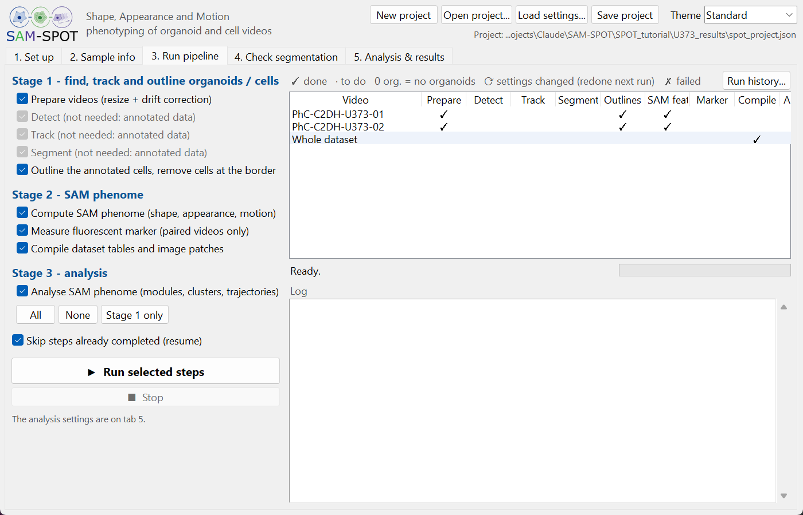
For PhC-C2DH-U373 the whole run took about a minute and a half on a 32-core workstation: 7 and 8 cell tracks are kept in sequences 01 and 02, giving 1074 cell instances.
On tab 4, Final tracks shows the outlines that are analysed; Raw segmentation shows every annotated outline before the cells at the border were removed.
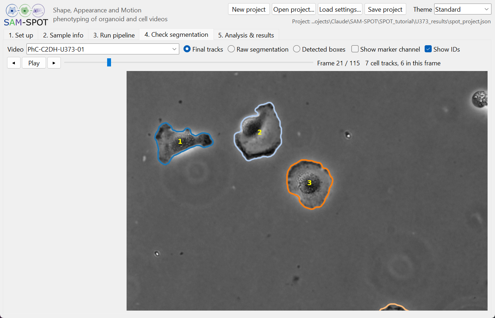
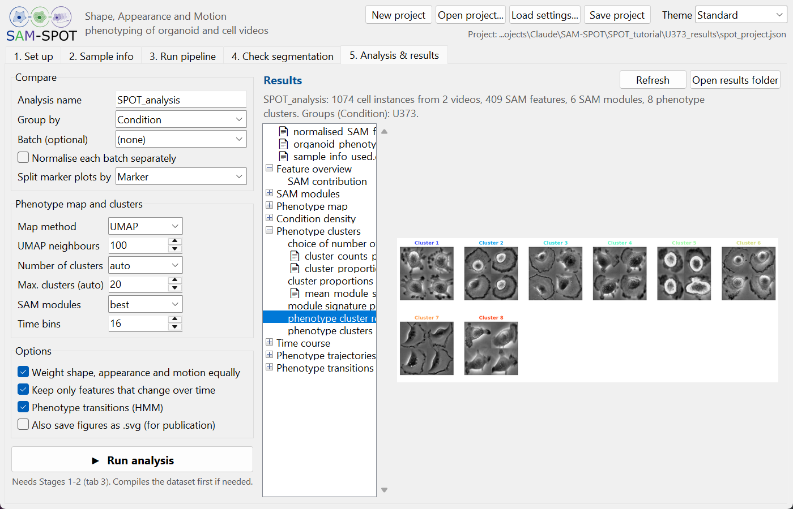
Everything is saved in the results folder. The analysis folder analysis/<name> contains:
| Folder / file | Contents |
|---|---|
00_feature_overview | How much shape, appearance and motion each contribute. |
01_SAM_modules | SAM modules: groups of co-varying features, their feature contributions, module scores on the map and the most representative objects of each module. |
02_phenotype_map | The 2D phenotype map of all object instances coloured by group, time and key features, and with the object images. |
03_condition_density | Where each group lies on the map. |
04_phenotype_clusters | Phenotype clusters (ordered by elongation), the choice of their number, representative objects, module signature and proportions per group. |
05_time_course | Cluster composition over time for each group. |
06_phenotype_trajectories | The average phenotype trajectory of each group on the map and their similarity. |
07_phenotype_transitions | Hidden Markov model transition matrix and graph between clusters, and the transition entropy per group. |
08_markers | Marker measurements on the map and per group / cluster (paired marker videos only). |
organoid_phenotypes.csv | One row per object and time point: sample information, map coordinates, cluster, module scores and marker values. Use it for your own statistics. |
normalised_SAM_features.csv | The normalised SAM features used in the analysis. |
The results folder also holds the compiled dataset tables <dataset>_{shape,image,motion,marker}_features.csv, the object outlines and image patches (.mat), and one folder per video under videos/ with the intermediate results of every step.
spot_project.json in the results folder. Open project... reopens it, also after the results folder was moved.run_history/<date-time>/ with the complete settings (run_config.json), the sample table, the log and the versions of SPOT, Python, the main packages, the GPU and the network weights. Run history... on tab 3 opens it.spot_project.json, a run_config.json or an analysis_config.json, either reopening its folders or applying its settings to the current project, and can restore its sample table. Results computed with other settings are then marked ⟳.python gui/spot_pipeline.py --config <results folder>/spot_project.json --steps prepare,detect,track,segment,postprocess,features,markers,compile,analysisSteps that do not apply (e.g. detection for a Cell Tracking Challenge dataset) are skipped.
The Theme menu at the top right changes the colours of the window: Standard (the system look), Pink Panther and Forest Green. The choice is remembered for the next session. Themes change only the window, not the result figures.
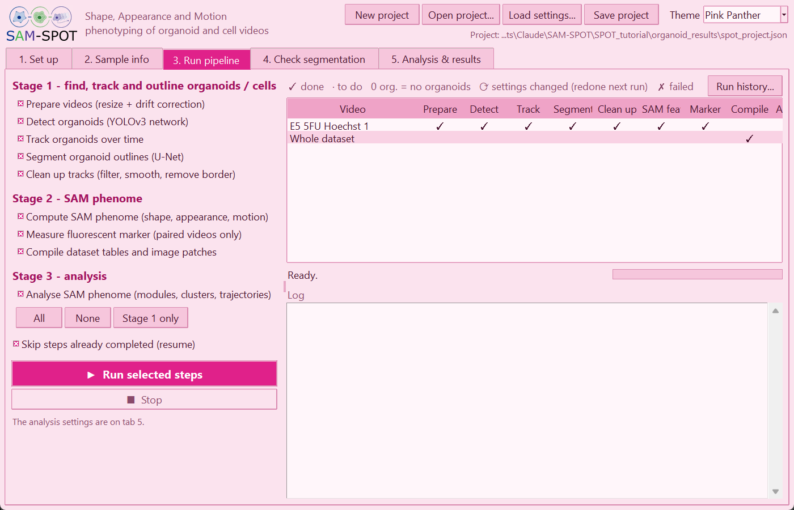
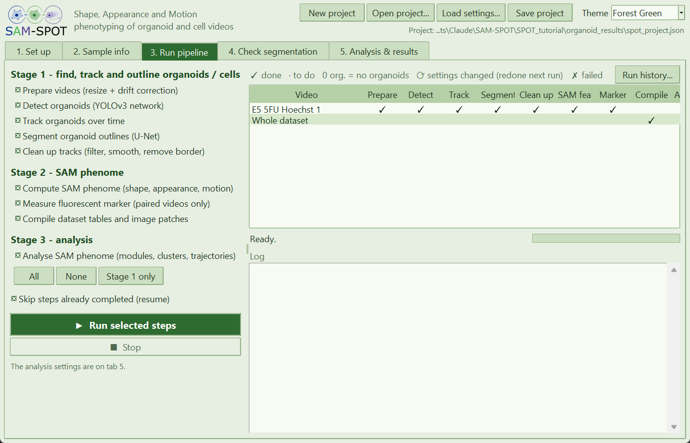
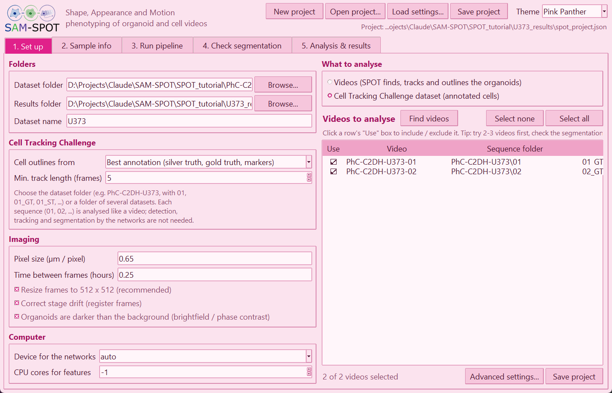
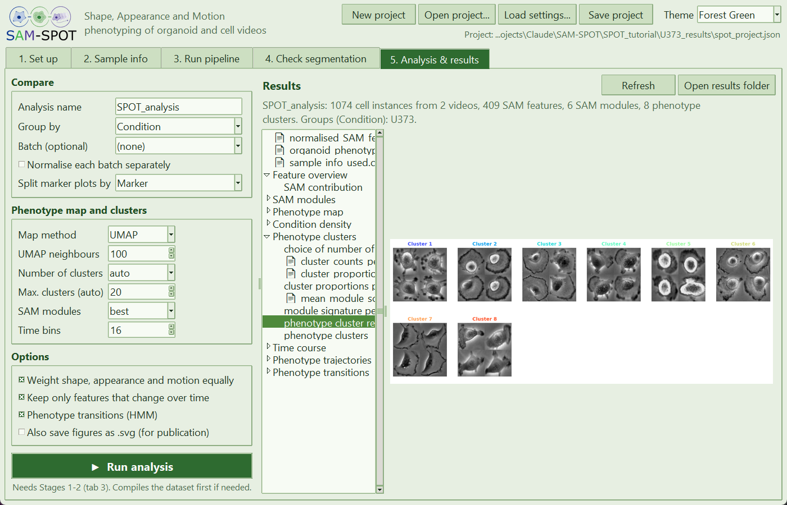
| Problem | What to do |
|---|---|
| No videos found | Check the File types; with marker videos, check that the brightfield names end with the given text (e.g. BF). For a Cell Tracking Challenge dataset, choose the dataset folder that contains 01, 02, ... |
| "(no track table!)" next to a sequence | The sequence has no <seq>_GT/TRA/man_track.txt (or no <seq>_RES/res_track.txt with My results). Test datasets of the challenge come without annotations and cannot be used. |
| A step shows ✗ failed | Read the red lines of the log on tab 3. The full log is in run_history/<date-time>/log.txt. |
| "the previous step has not been run" | Each step needs the one before it: tick the earlier steps too. |
| A video shows 0 org. | No organoid was left after clean-up. Check it on tab 4 (Detected boxes, Raw segmentation) and adjust the Advanced settings. |
| Not completed: ... on tab 5 | One panel of the analysis could not be made, usually because there are too few objects or time points for it; the others are saved. The reason is in the log. |
| The networks are slow | Set Device for the networks to cuda if you have an NVIDIA GPU with a CUDA build of PyTorch. |